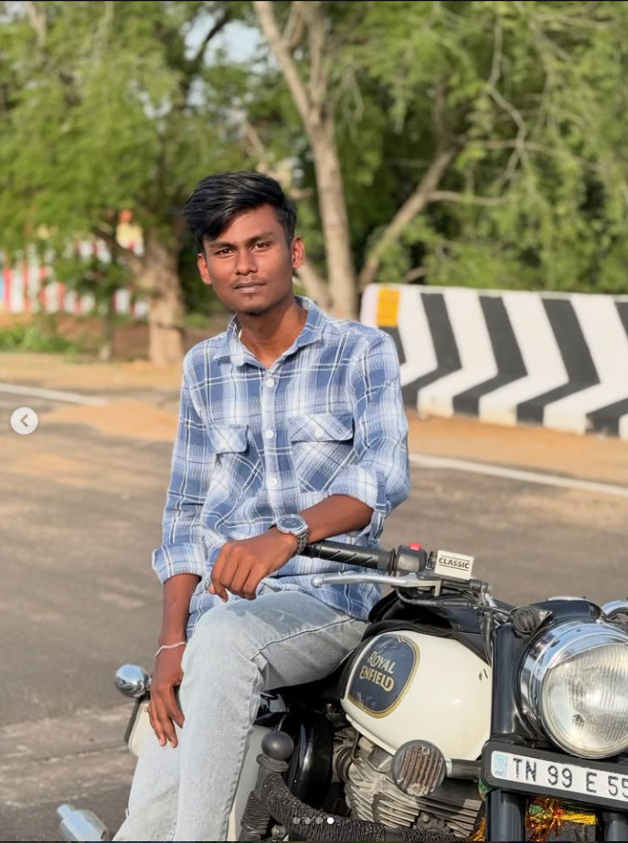

Web Development
Modern responsive websites using HTML, CSS, JavaScript and evolving frameworks.
Hello, welcome to my portfolio
I am Anbu Selvam, an Information Technology student currently pursuing my 3rd year at Mount Zion College of Engineering and Technology. I am passionate about web development, software development and emerging technologies.

Scroll to explore ↓
Know more about my journey and interests
I believe good technology should feel simple, useful and a little bit magical. My goal is to build digital products that people enjoy using.
I am Anbu Selvam V, a passionate developer interested in web development, software development, UI design and emerging technologies.
I continuously improve my technical knowledge through practical projects, experimentation and the habit of asking how things could work better.
Let's work together ↗Technologies and tools I work with
What I can build for you
From a sharp first screen to a dependable backend, I enjoy exploring every layer of a digital product.
Modern responsive websites using HTML, CSS, JavaScript and evolving frameworks.
User-friendly applications designed for smooth performance and a clear experience.
Clean, attractive interfaces that help users understand what to do next.
Server-side applications, APIs and database foundations for useful products.
Some of my practical development projects
Learning and development journey
Started learning HTML, CSS and JavaScript and created my first interactive websites.
Currently pursuing my third year in the Information Technology department at Mount Zion College of Engineering and Technology.
Expanding my skills into frontend, backend, databases, application development and practical product thinking.
HTML, CSS and JavaScript foundations
Programming and application development
SQL and database fundamentals
Frontend and backend exploration
Have a project idea? Let's create something amazing together.
I am always interested in discussing new projects, creative ideas and opportunities.